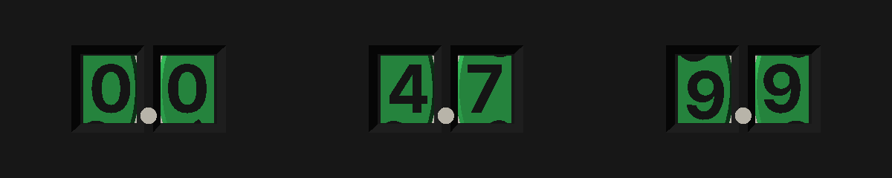
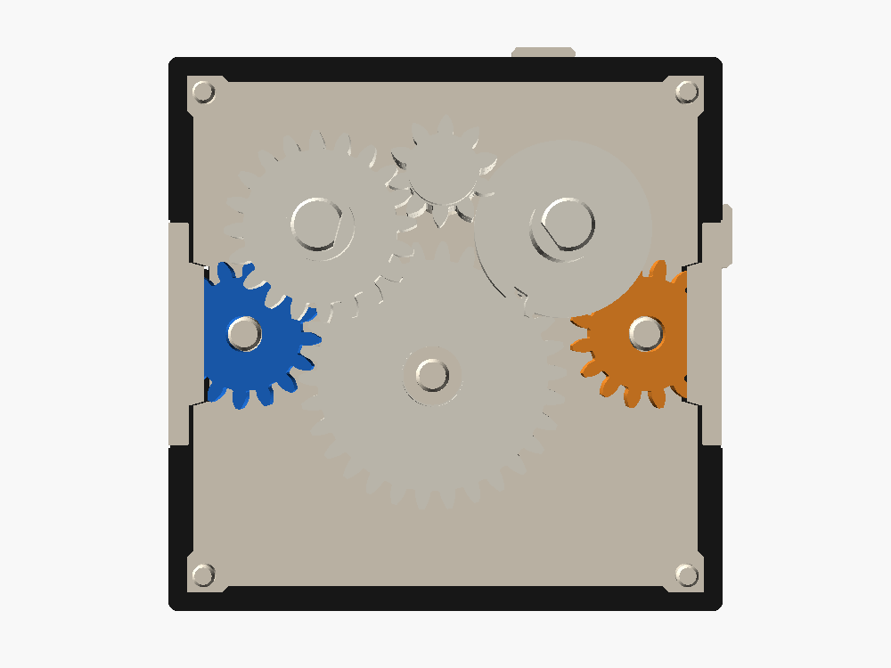
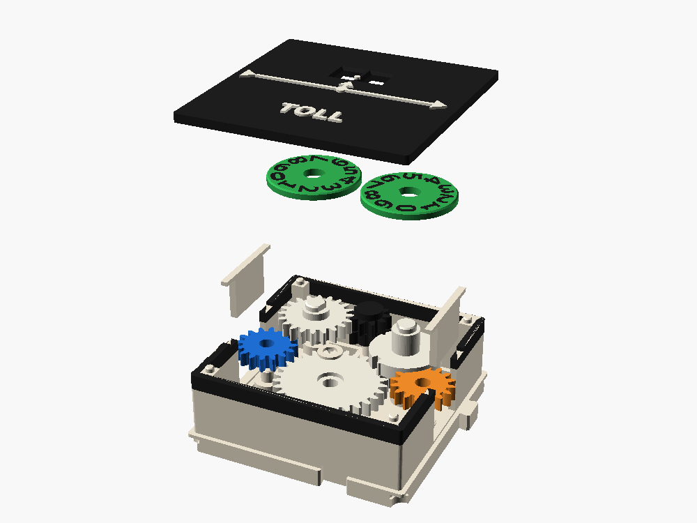

TOLL
A counter that doesn't end the line. It counts turns to a tenth, 0.0 to 9.9, like TURNS, and passes the line on out of E. Put it anywhere in a line and it keeps a tally of what went through, like a toll booth.


Ports
| Port | Side | Lane | Teeth | Layer | Role |
|---|---|---|---|---|---|
| W | W | B | 16 | 1 | input |
| E | E | B | 16 | 1 | output, x1 forward |
How it works

The line runs through the tenths wheel: W (16) → A (30) → U (16) → E (16). That's three meshes, so the output is forward and x1. U turns clockwise, one turn per turn of the line, so it shows tenths just like TURNS' U.
The rest is TURNS. As U goes from 9 to 0, its carry tooth kicks the pinion P 72°, and P steps the turns wheel T one digit. Between carries, P's long teeth straddle U's ring and lock T in place.
What changed from TURNS. To mesh the E port, U has to sit 16 mm from it, so both wheels moved up 2.3 mm, and a 30-tooth idler reaches from W to U under the row.
Exploded

Torque cost
4 stages: three meshes through to E, plus the carry once per turn. The counter adds a little drag, so whatever comes after TOLL gets slightly less.
Parts
- Shell (bone, Readouts band), two keepers, a cap on A.
- Lid in Readouts black, white raised lettering.
- Port W. Port E.
- Stacks A, U, P, T.
- Two digit wheels.
- Bought: nothing.
Drop-in order: W, E and the keepers; A; U; P at rest; T; the cap; the wheels at 0; the lid. Every part is standard, so once the design thread adds it to the catalog, the library draws it like any other box.
Checked
- Every moving part against every other, exported and intersected: clean at line turn 0, 170, 324, 340, 350 and 360 (through the carry), and at 3590.
- Fixed parts against each other: clean.
- The reading matches the model at 0.0, 4.7 and 9.9.
Verify when printed
- The carry's kick downstream: E slows a little as U pushes P once per turn.
- A (30 teeth) in one cell, 1.4 mm from T's column.